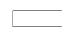

BAB 7. DESAIN SISTEM SECARA UMUM
7.1 Tujuan Desain Sistem
Tujuan dari desain sistem secara umum adalah untuk memberikan gambaran secara umum kepada user tentang sistem yang baru. Pada tahap desain secara umum, komponen-komponen sistem informasi dirancang dengan tujuan untuk dikomunikasikan kepada user. Komponen sistem informasi yang didesain adalah model, output, input, database, teknologi & kontrol.
7.2 Desain Model Secara Umum
Sistem analis dapat mendesain model dari sistem informasi yang diusulkan dalam bentuk Physical System & Logical Model. Bentuk Physical System dapat digambarkan dengan system flowchart. Dan Logical Model dapat digambarkan dengan Data Flow Diagram (DFD).
Data Flow Diagram
Data Flow Diagram digunakan untuk menggambarkan suatu sistem yang telah ada atau sistem baru yang akan dikembangkan secara logika.
- 1.
Simbol yang digunakan dalam Data Flow Diagram
1).External Entity (Kesatuan Luar)
2).Data Flow (Arus Data)
3).Process (Proses)
4).Data Store (Simpanan Data)
1.External Entity (Kesatuan Luar)
- Kesatuan luar merupakan kesatuan (entity) di lingkungan luar sistem yang dapat berupa orang, organisasi, atau sistem lainnya yang berada di lingkungan luarnya yang akan memberikan input atau menerima output dari sistem. Kesatuan luar dapat berupa:
a. Suatu kantor, departemen, atau divisi dlm perusahaan
b. Orang atau sekelompok orang di organisasi tsb
c. Suatu organisasi atau orang yg berada di luar organisasi seperti misalnya langganan, pemasok
d. Penerima akhir dari suatu laporan yang dihasilkan oleh sistem
Simbol: kesatuan luar dapat digambarkan dengan suatu notasi kotak.
2. Data Flow (Arus Data)
- Arus data mengalir diantara proses, simpanan data dan kesatuan luar. Arus data ini menunjukkan arus dari data yang dapat berupa masukan untuk sistem atau hasil dari proses sistem dan dapat berbentuk sbb:
a. Formulir atau dokumen yang digunakan di perusahaan
b. Laporan tercetak yang dihasilkan oleh sistem
c. Masukan data untuk komputer
d. Data yang dibaca atau direkamkan ke suatu file
e. Suatu isian yang dicatat pada buku agenda
Simbol: Arus data dpt digbrkan dengan suatu panah.
3. Process (Proses)
-
Suatu proses adalah kegiatan atau kerja yang dilakukan oleh orang, mesin atau komputer dari
hasil suatu arus data yang masuk ke dalam proses untuk dihasilkan arus data yang akan keluar
dari proses.
Simbol: Lingkaran.
4. Data Store (Simpanan Data)
- Simpanan data merupakan simpanan dari data yang dapat berupa:
a. Suatu file atau database di sistem komputer
b. Suatu arsip atau catatan manual
c. Suatu tabel acuan manual
d. Suatu agenda atau buku
Simbol:
- 2.
Bentuk Data Flow Diagram
Terdapat 2 bentuk Data Flow Diagram yaitu Physical Data Flow Diagram (Diag. Arus Dt Fisik) dan Logical Data Flow Diagram (Diag. Arus Dt Logika). Data Flow Diagram
No Kesatuan Luar Input Output 1 Mahasiswa Biodata Mahasiswa Kartu Mahasiswa Fisik lebih tepat digunakan untuk menggambarkan sistem yang ada (sistem lama) dan lebih menekankan pada bagaimana proses dari sistem yang diterapkan. Sedangkan diagram arus data logika digunakan utk menggambarkan sistem yang akan diusulkan dan lebih menekankan proses-proses apa yang terdapat dalam sistem.
- 3.
Pedoman Menggambarkan Data Flow Diagram
1. Identifikasikan terlebih dahulu semua kesatuan luar yang terlibat di sistem.
2. Identifikasikan semua input dan output yang terlibat dengan kesatuan luar.
3. Gambarkanlah terlebih dahulu suatu diagram konteks. Dari diagram konteks ini akan digambar dengan lebih terinci lagi yang disebut dengan level 0. Tiap-tiap proses di level 0 akan digambar secara lebih terinci lagi disebut dengan level 1. Tiap-tiap proses di level 1 akan digambar secara lebih terinci lagi disebut dengan level 2 dst sampai tiap-tiap proses tidak dapat digambar lebih terinci lagi.
4. Gambarlah bagan berjenjang untuk semua proses yang ada di sistem terlebih dahulu. Bagan berjenjang digunakan untuk mempersiapkan penggambaran DAD ke level-level lebih bawah lagi.
5. Gambarlah sketsa DAD untuk diagram level 0 berdasarkan proses di bagan berjenjang.
6. Gambarlah DAD utk level-level berikutnya yaitu level 1 dst utk tiap-tiap proses yg dipecah-pecah sesuai dengan bagan berjenjangnya.
7.3 Desain Input Secara Umum
Langkah-langkah desain input secara umum adalah:
- 1. Menentukan kebutuhan input dari sistem informasi
- 2. Menentukan parameter dari desain input tsb.
-
Contoh :
Data Induk Pegawai
Nomor Induk Pegawai:
Nama Pegawai:
Alamat:
Tempat Lahir:
Tanggal Lahir:
Pendidikan:
7.4 Desain Output Secara Umum
Langkah-langkah desain output secara umum adalah:
- 1. Menentukan kebutuhan output dari sistem informasi
- 2. Menentukan parameter dari desain output tsb.
-
Contoh :
Data Pegawai
Nip Nama Alamat Tempat Lahir Tanggal Lahir Pendidikan
7.5 Desain Data Base Secara Umum
Database dibentuk dari kumpulan file. Sedangkan file dibentuk dari kumpulan Record. Dan record dibentuk dari kumpulan field. Sedangkan field merupakan kumpulan dari item data. Item data dapat berupa huruf, angka atau simbol-simbol khusus
Langkah-langkah desain database secara umum:
- 1. Menentukan kebutuhan file pada sistem informasi
- 2. Menentukan parameter dari desain database tsb. : Type File, Media File, Organisasi File & key field dari file tsb
7.6 Desain Teknologi Secara Umum
Untuk tahap desain teknologi secara umum, langkah pertama perlu dilakukan oleh analis adalah mengidentifikasi jenis dari teknologi yang dibutuhkan, baik yang berkaitan dengan penggunaan hardware (perangkat keras), software (perangkat lunak) dan brainware yaitu personil yang terlibat dengan sistem informasi. Kemudian langkah kedua adalah menentukan jumlah yang dibutuhkan dalam penggunaan hardware maupun software untuk sistem informasi tsb.

Written by Ahmad Maulana
Follow on Instagram: @a.hmadmaulana